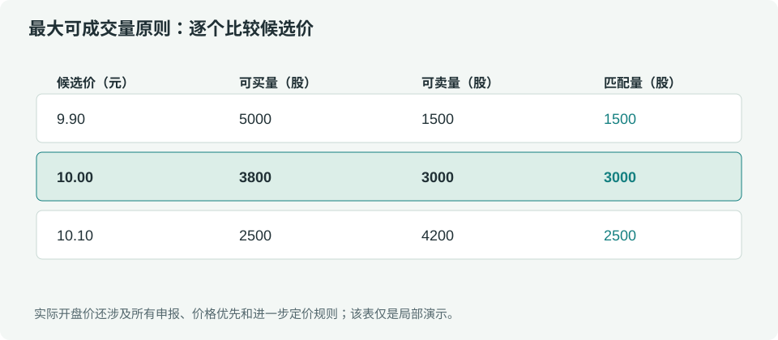
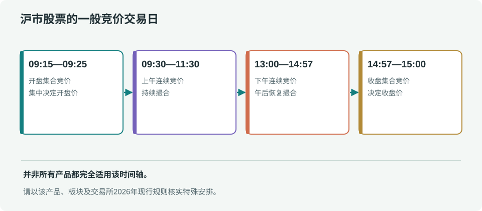

CHAPTER 03 · INVESTMENT RESEARCH
交易机制：订单如何变成成交
为什么报盘不等于成交？用订单簿、集合竞价和完整交易日解释价格形成与交易成本。
一张订单是指令，不是成交承诺
看到屏幕上某只股票的买一价是 10.00 元、卖一价是 10.01 元，并不意味着你以 10.00 元挂买单就一定成交。订单有价格、数量、有效期、交易时段和交易所处理规则；它需要遇到符合条件的对手方，才可能撮合。
研究成交机制时，必须把委托价格、盘中显示的参考价格、实际成交价分开。特别是集合竞价中的参考价或未成交委托变化，不是已经产生的交易回报。
集合竞价：将许多买卖申报集中决定一个价格
集合竞价在指定期间接收申报，按交易所规则确定成交价格。直觉上可以遍历候选价格：在某个价格及以上愿意买入的数量，与在该价格及以下愿意卖出的数量，各能形成多少对手成交？两者较小者是该候选价下的理论可成交量。

不能只比较“买单金额多不多”。同时要考虑买卖申报的价格条件；遇到多个价格可实现同样最大成交量时，不能任意选择其中一个，而要继续依据交易所定价规则执行。
连续竞价：价格优先与时间优先如何实现
在连续竞价中，系统按照适用的撮合规则维护订单簿：更高的买价通常先于较低的买价，更低的卖价通常先于较高的卖价；同价位按申报到达顺序等规则排队。只有买方与卖方价格兼容，才会形成实际成交。
假设有两个卖单
卖单甲：10.01 元、500 股；卖单乙：10.02 元、300 股。新的限价买单要求“最多 10.02 元，买入 600 股”：在没有其他申报的简化订单簿中，它会先与低价卖单成交 500 股，再与 10.02 元的卖单成交 100 股。成交不是必然只按你的委托限价进行。
这个例子未覆盖市价保护、最小报价单位、撤单、部分成交、交易暂停及订单类型特例。
沪市股票的时段：参考价与成交价形成方式会变化
对于沪市一般股票竞价交易日，开盘集合竞价通常安排在 09:15–09:25；连续竞价在 09:30–11:30、13:00–14:57；14:57–15:00 为收盘集合竞价。不同产品、特别板块、盘后交易、节假日和临时停牌需要查具体规则。

2026 年上交所、深交所分别发布了修订版交易规则。上交所 2026 年版本自 7 月 6 日施行，部分条文有暂缓安排；规则修订还涉及基金收盘阶段和部分风险警示股票的涨跌幅制度。不能继续把旧版所有涨跌幅与竞价安排当成现行通则。
涨跌幅、T+1、交收：三个互不等价的概念
价格涨跌幅限制是特定证券在特定阶段可申报价格范围的规则，某些新上市或特别情形可能不同。当日回转交易关注今日买入的证券是否可以今日卖出；境内普通 A 股一般不实行当日买入当日卖出。清算交收则是证券和资金如何完成交割的后续流程，不能与“何时能卖”直接混同。
融资融券和其他杠杆业务需要另外满足资格、保证金及强制平仓规则。ETF、债券和衍生品的回转交易安排可能与普通 A 股不同，因此“整个 A 股市场都是 T+1”过于笼统。应按交易所、品种和券商合约分别核对。
交易成本不止佣金：计算一次往返
一次交易的总成本可能包括券商佣金、交易所与登记结算相关费用、买卖价差、市场冲击和适用的税费。费率可能因市场、产品和政策调整而变化。为理解数量级，假设买入 100,000 元、随后以同样金额卖出，示例佣金率每边 0.025%，示例卖出环节税率 0.05%，忽略其他项目：两次佣金各 25 元，示例税额 50 元，合计 100 元。
适用性提醒：上述两个费率仅是算术假设，不能替代当日券商收费清单或税务与交易所公告。真实买卖还可能承担买卖价差与滑点。
| 要区分的价格 | 含义 | 研究风险 |
|---|---|---|
| 报盘价 | 买方愿付 / 卖方愿售的申报价格 | 并非真实成交价 |
| 成交价 | 实际满足订单撮合条件的价格 | 存在部分成交与冲击 |
| 净实现收益 | 成交回报扣掉费用税收等 | 小额策略可能被成本吞噬 |
下单前的四项验证
核对题
- 若买单限价低于卖一价，为什么不一定马上成交？
- 集合竞价阶段看到的价格变化，为什么不能直接当作已成交价格？
- 如何分别核对一只 ETF 的当日回转规则、价格限制和交易费用？
- 若某策略理论上每次只赚 0.08%，往返成本估计 0.10%，交易次数增加会怎样影响净收益？
交易规则是市场基础设施的一部分：研究者应先确定适用交易所与证券类别，再把策略的成交假设放入真实规则中检验，而不是从某一笔演示交易推出普遍规律。
资料来源与适用范围
以下来源用于核对概念和截至标注日期的规则。文中数值例子为构造数据，不能据此推断未来收益。特殊证券、交易场所和规则版本须单独核验。